콘크리트기사 (2020-08-22 기출문제)
1과목: 재료 및 배합
1. 골재품질 시험에 관한 설명으로 옳은 것은?
- 밀도시험은 골재 입도의 상태 및 입형의 양부를 판정하는데 사용된다.
- 체가름 시험은 골재의 흡수율 및 표면수량의 산정에 필요하다.
- 단위용적질량 시험은 콘크리트 배합 시 사용 수량을 조절하기 위하여 필요하다.
- 알칼리 잠재반응 시험은 콘크리트 경화체의 팽창을 일으키는 실리카 성분을 파악하는데 이용된다.
(정답률: 61%)

2. 아래의 표는 재령별 시멘트 조성화합물의 발열량(cal/g)의 예를 나타낸 것이다. 조성 화합물 A에 가장 적합한 것은?
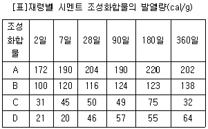
- C3S
- C2S
- C4AF
- C3A
(정답률: 75%)
3. 시멘트의 비표면적에 관한 설명으로 틀린 것은?
- 시멘트의 분말도를 나타내는 방법이다.
- 시멘트 내의 공기량을 측정하는 시험이다.
- 초기강도는 비표면적이 큰 콘크리트가 높다.
- 블레인 공기 투과 장치를 사용하여 시험 할 수 있다.
(정답률: 64%)
4. 포틀랜드 시멘트의 품질규격에 관한 설명으로 옳지 않은 것은?
- 종류에 관계없이 응결시간의 종결시간은 10시간 이하이다.
- 종류에 관계없이 강열 감량은 5.0%이하이다.
- 1종 포틀랜드 시멘트의 안정도는 0.8%이하이다.
- 전 알칼리 함량은 종류에 관계없이 0.5%(Na2O)이하로 규정되어 있다.
(정답률: 50%)
5. 콘크리트 1m3을 제조하는데 골재의 절대 용적이 650L, 잔골재율이 41.5%일 때 잔골재량(㉠)과 굵은 골재량(㉡)은? (단, 잔골재의표건 밀도=0.00265g/mm3, 굵은 골재의 표건 밀도=0.00271g/mm3)
- ㉠ : 7⑤kg, ㉡ : 1015kg
- ㉠ : 715kg, ㉡ : 1030kg
- ㉠ : 730kg, ㉡ : 1045kg
- ㉠ : 740kg, ㉡ : 1⑤0kg
(정답률: 71%)
6. 시멘트 비중 시험(KS L 5110)에 의하여 플라이 애시의 비중시험을 실시한 결과, 광유를 르샤틀리에 비중병에 넣고 안정된 후 측정한 눈금이 0.7mL였다. 이 비중병에 플라이 애시 40g을 넣고 광유가 올라온 눈금을 측정한 결과 18.5mL를 얻었다면 플라이 애시의 비중은?
- 2.25
- 2.55
- 2.85
- 3.15
(정답률: 70%)
7. 일반 콘크리트에서 물-결합재비에 대한 설명으로 틀린 것은?
- 제빙화학제가 사용되는 콘크리트의 물-결합재비는 45% 이하로 한다.
- 콘크리트의 탄산화 저항성을 고려하여 물-결합재비를 정할 경우 55% 이하로 한다.
- 콘크리트의 수밀성을 기준으로 물-결합재비를 정할 경우 그 값은 40% 이하로 한다.
- 압축강도와 물-결합재비와의 관계는 시험에 의해 정하는 것을 원칙으로 한다. 이 때 공시체는 재령 28일을 표준으로 한다.
(정답률: 71%)
8. 골재의 조립률 계산 시 필요한 체가 아닌 것은?
- 40mm
- 15mm
- 1.2mm
- 0.15mm
(정답률: 78%)
9. 연속 생산되는 콘크리트에서 콘크리트의 품질에 큰 변화를 일으키지 않도록 허용하는 잔골재 조립률의 최대 변화량으로 옳은 것은?
- ±0.10
- ±0.15
- ±0.20
- ±0.25
(정답률: 71%)
10. 일반 콘크리트의 배합설계에 관한 설명으로 틀린 것은?
- 물-결합재비는 소요의 강도, 내구성, 수밀성 및 균열지향성 등을 고려하여 정하여야 한다.
- 단위수량은 작업이 가능한 범위 내에서 될 수 잇는 대로 적게 되돍 시험을 통해 정하여야 한다.
- 콘크리트의 슬럼프는 운반, 타설, 다지기 등의 작업에 알맞은 범위 내에서 될 수 있는 한 작은 값으로 정하여야 한다.
- 잔골재율은 소요의 작업성을 얻을 수 있는 범위 내에서 단위수량이 최대가 되도록 시험에 의하여 정하여야 한다.
(정답률: 76%)
11. 경량골재 콘크리트에 관한 설명으로 틀린 것은?
- 경량 굵은 골재의 부립률은 10%를 최대 한도로 한다.
- 경량 굵은 골재의 최대 치수는 원칙적으로 25mm로 한다.
- 경량골재의 씻기시험에 의해 손실되는 양은 10% 이하로 한다.
- 천연 경량 잔골재 및 굵은 골재 혼합물의 건조 최대 단위 용적 질량은 1040kg/m3이하로 한다.
(정답률: 56%)
12. 콘크리트의 수화반응에 대한 설명으로 옳지 않은 것은?
- 분말이 고운 것일수록 단기 재령에서의 수화열이 크다.
- 수화반응은 발열반응으로 시멘트는 수화반응의 진행과 함께 열을 발산한다.
- 시멘트의 수화열은 수화시멘트와 미수화시멘트의 용해열 차이로 측정한다.
- 수화열은 시멘트에 C3A가 많이 포함될수록 낮고, C2S가 많이 포함될수록 높다.
(정답률: 76%)
13. 설계기준압축강도가 24MPa인 콘크리트를 배합설계 하려고 한다. 30회 이상의 콘크리트 압축강도 시험실적으로부터 구한 표준편차가 3.15MPa일 때, 이 콘크리트의 배합설계 시 사용해야 할 배합강도는?
- 26.2MPa
- 27.8MPa
- 28.2MPa
- 29.8MPa
(정답률: 61%)
14. 플라이 애시의 품질을 규정하기 위한 시험 항목이 아닌 것은?
- 응결 시간
- 총 인산염
- 플로값 비
- 산화마그네슘(MgO)
(정답률: 42%)
15. 콘크리트 배합에서 굵은 골재의 최대 치수에 관한 규정으로 틀린 것은?
- 굵은 골재의 최대 치수는 슬래브 두께의 2/3을 초과해서는 안 된다.
- 일반적인 구조물의 경우 굵은 골재의 최대 치수는 20mm 또는 25mm로 한다.
- 굵은 골재의 최대 치수는 거푸집 양 측면 사이의 최소 거리의 1/5을 초과해서는 안된다.
- 굵은 골재의 최대 치수는 개별 철근, 다발철근, 긴장재 또는 덕트 사이 최소 순간격의 3/4을 초과해서는 안 된다.
(정답률: 67%)
16. 콘크리트용 플라이 애시로 사용할 수 없는 것은?
- 수분이 0.5%인 경우
- 강열 감량이 6%인 경우
- 실리카 함유량이 48%인 경우
- 실리카 함유량이 84%인 경우
(정답률: 63%)
17. 시방배합에서 단위 시멘트량 390kg/m3, 단위수량 175kg/m3, 단위 잔골재량 680kg/m3 및 단위 굵은 골재량 1100kg/m3가 얻어졌다. 골재의 현장 야적 상태가 다음과 같을 경우 입도 및 표면수보정을 통해 현장배합으로 변환한 잔골재량(㉠) 및 굵은 골재량(㉡)은?
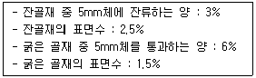
- ㉠ : 646kg/m3, ㉡ : 1167kg/m3
- ㉠ : 646kg/m3, ㉡ : 1107kg/m3
- ㉠ : 546kg/m3, ㉡ : 1167kg/m3
- ㉠ : 546kg/m3, ㉡ : 1107kg/m3
(정답률: 41%)
18. 잔골재의 표면수 측정방법(KS F 2509)에 관한 설명으로 틀린 것은?
- 잔골재의 표면수 측정방법에는 징량법과 용적법이 있다.
- 시험할 때 시료의 양이 많을수록 정확한 결과가 얻어진다.
- 잔골재의 표면수율은 일반적으로 절대건조 상태의 골재에 대한 질량비(%)로 나타낸다.
- 시료는 대표적인 것을 400g 이상 채취하여 가능한 한 함수율의 변화가 없도록 주의하여 2분하고 각각을 1회의 시험의 시료로 한다.
(정답률: 42%)
19. 시멘트의 강도 시험 방법(KS L ISO 679)에 따른 모르타르의 배합을 올바르게 나타낸 것은? (단, ㉠은 시멘트와 표준사의 비, ㉡은 물-시멘트 비)
- ㉠=1:2, ㉡=50%
- ㉠=1:2, ㉡=60%
- ㉠=1:3, ㉡=50%
- ㉠=1:3, ㉡=60%
(정답률: 71%)
20. 콘크리트 및 모르타르 혼화재로 사용되는 고로슬래그 미분말의 품질시험에서 활성도지수를 측정하기 위해 적용되는 재령일이 아닌 것은?
- 고로슬래그 비분말 3종에 대한 재령 28일의 활성도 지수는 50%이상이다.
- 기준 모르타르의 압축강도에 대한 시험 모르타르의 압축강도비를 백분율로 표시한 것을 활성도 지수라 한다.
- 활성도 지수는 재령 7일, 28일 및 91일에 측정한다.
- 시험 모르타르 제작 시 시멘트와 고로슬래그 미분말의 혼합비는 1:1이다.
(정답률: 43%)
2과목: 제조, 시험 및 품질관리
21. 시멘트의 일반적인 성질 중 수화열에 관한 설명으로 틀린 것은?
- 내외의 온동차로 인하여 균열 발생의 원인이 된다.
- 물과 완전히 반응하면 125cal/g 정도의 열을 발생한다.
- 수화열 저감 대책으로 분말도가 높은 시멘트를 사용하여야 한다.
- 콘크리트의 내부온도를 상승시키므로 한중콘크리트 공사에 유효하다.
(정답률: 66%)
22. 지름 100mm, 길이 200mm 원주형 공시체로 쪼갬 인장 강도 시험을 수행한 결과, 재하하중 85kN에서 파괴되었다면 쪼갬 인장강도는?
- 2.4MPa
- 2.7MPa
- 3.0MPa
- 3.5MPa
(정답률: 65%)
23. 제조공정의 품질관리 및 검사 시, 시험 결과를 바탕으로 시방배합으로부터 현장배합으로 수정하는 항목이 아닌 것은?
- 골재의 표면수율
- 굵은 골재의 실적률
- 굵은 골재의 조립률
- 5mm 체에 남는 잔골재량
(정답률: 38%)
24. 레디믹스트 콘크리트 품질 규정 중 콘크리트 종류별 공기량 및 허용오차 범위로 틀린 것은?
- 보통 콘크리트 : 4.5% ± 1.5%
- 포장 콘크리트 : 4.5% ± 1.5%
- 고강도 콘크리트 : 5.5% ± 1.5%
- 경량 골재 콘크리트 : 5.5% ± 1.5%
(정답률: 58%)
25. 급속 동결융해 시험에서 150사이클 및 180사이클에서 상대 동 탄성계수가 각각 65% 및 50%가 되었다면 동결융해에 대한 내구성 지수는? (단, 직선(선형)보간법을 활용한다.)
- 16
- 32
- 50
- 65
(정답률: 55%)
26. 다음 관리도에 관한 설명으로 옳지 않은 것은?
- p관리도 : 단위당 결점수 관리도
- x관리도 : 측정값 자체의 관리도
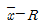
관리도 : 평균값과 범위의 관리도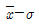
관리도 : 평균값과 표준편차의 관리도
(정답률: 60%)
27. 황산염은 수산화칼슘과 반응하여 석고를 생성하고 콘크리트의 체적증대를 유발한다. 이 석고는 다시 시멘트 중의 무엇과 반응하여 현저한 체적팽창을 일으키는가?
- C2S
- C3S
- C3A
- C4AF
(정답률: 50%)
28. 품질관리에 사용하는 관리도에 대한 설명으로 틀린 것은?
 관리도는 공정의 해석에 매우 유용하다.
관리도는 공정의 해석에 매우 유용하다.- 특성치가 관리한계선의 안쪽에 들어오면 어느 경우에도 공정이 안정한 것이다.
- 관리한계는 일반적으로 그 통계량의 평균치를 중심으로 하고, 표준편차의 3배를 취하는 방법을 사용한다.
- 1개의 시험결과를 사용한 x관리도보다 n개의 시험결과 평균치를 사용한
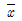
관리도가 관리한계의 폭이 넓다.
(정답률: 27%)
29. 시험조건이 콘크리트의 압축강도에 영향을 미치는 경우에 대한 설명으로 틀린 것은?
- 재하속도가 빠를수록 강도는 크게 나타난다.
- 공시체의 높이와 지름의 비(H/D)가 클수록 강도는 증가한다.
- 습윤양생 후 공기 중에 건조시키면 일시적으로 강도는 높게 나타난다.
- 공시체의 가압변에 요철(
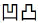
)이 있는 경우 강도가 작게 측정된다.
(정답률: 64%)
30. 압력법에 의한 공기량 시험의 적용범위 및 방법에 대한 설명으로 틀린 것은?
- 인공 경량 골재를 사용한다.
- 콘크리트를 3층으로 나누어 각 층을 25회씩 다짐봉으로 다진다.
- 굵은 골재의 최대 치수 40mm 이하의 보통 골재를 사용한 콘크리트에 대해서 적당하다.
- 아날로그식 압력계를 읽는 경우 압력계의 바늘을 손가락으로 가볍게 두드리고 나서 읽는다.
(정답률: 65%)
31. 골재의 함수상태에 관한 설명 중 틀린 것은?
- 절대건조상태란 대기 중에서 완전히 건조된 상태이다.
- 표면건조상태는 콘크리트의 배합설계 시 기준이 된다.
- 표면건조상태란 내부에는 수분이 있으나 표면수는 없는 상태이다.
- 유효흡수량이란 공기 중 건조상태로부터 표면건조포화상태로 되는 데 필요한 수량이다.
(정답률: 47%)
32. 수분의 증발이 원인이 되어 타설 후부터 콘크리트의 응결 종결시까지 발생하는 균열을 초기 건조균열이라고 한다. 이러한 균열이 발생되기 쉬운 경우로 틀린 것은?
- 바람이 없고 기온이 낮으며, 건조가 심한 경우
- 콘크리트 노출면의 수분 증발속도가 블리딩 속도보다 빠른 경우
- 시멘트의 응결·경화가 급격하게 일어나 콘크리트 내부에 물이 흡수된 경우
- 바닥판에서 거푸집으로부터의 누수가 심하고 블리딩이 전혀 없으며 초기에 콘크리트 표면에 수분이 부족한 경우
(정답률: 49%)
33. NaCl이 질량으로 0.03% 포함된 해사를 950kg/m3사용하여 콘크리트를 제조할 경우, 해사로 인한 콘크리트의 염화물 이온 함유량은?
- 0.143kg/m3
- 0.173kg/m3
- 0.285kg/m3
- 0.346kg/m3
(정답률: 32%)
34. 콘크리트의 압축강도, 슬럼프, 공기량 등의 특성을 관리하는데 적합한 관리도는?
- 파레토도
- 특성요인도
- 히스토그램
 관리도
관리도
(정답률: 60%)
35. 공시체(150×150×530mm)를 지간 450mm의 4점 재하 장치를 이용하여 파괴하중 33kN이 측정되었다면, 이 콘크리트의 휨 강도는?
- 1.1MPa
- 2.2MPa
- 3.3MPa
- 4.4MPa
(정답률: 49%)
36. 콘크리트의 크리프에 관한 설명으로 틀린 것은?
- 시멘트량이 많을수록 크리프가 크다.
- 재하시의 재령이 작을수록 크리프가 크다.
- 보통 시멘트는 조강 시멘트에 비하여 크리프가 크다.
- 재하기간 중의 대기의 습도가 높을수록 크리프가 크다.
(정답률: 42%)
37. 레디믹스트 콘크리트의 받아들이기 검사에 있어서 시험 규정에 대한 설명으로 틀린 것은?
- 콘크리트의 강도 시험 횟수는 원칙적으로 200m3당 1회의 비율로 한다.
- 강도시험 1회의 시험 결과는 구입자가 지정한 호칭강도의 85% 이상이어야 한다.
- 공기량의 허용오차는 특별한 지정이 없는한 ±1.5%로 한다.
- 염화물 함유량은 염소 이온(CI-)량으로서 0.30kg/m3이하로 한다. 다만, 구입자의 승인을 얻은 경우에 0.60kg/m3이하로 할 수 있다.
(정답률: 54%)
38. 일반 콘크리트에 적용된 균열유발이음에 대한 설명으로 틀린 것은?
- 미리 정해진 장소에 균열을 집중시킬 목적으로 설치한다.
- 수밀구조물에는 지수판을 설치하는 등 지수대책을 수립한다.
- 균열유발이음의 간격은 부재높이의 1배 이상에서 2배 이내로 한다.
- 단면의 결손율은 부재두께의 10%를 약간 넘는 정도로 한다.
(정답률: 41%)
39. 굳지 않은 콘크리트 워커빌리티를 나타내는 하나의 지표이며, 콘크리트의 묽은 정도를 나타내는 콘크리트의 특성으로 보통 슬럼프 값으로 표시되는 것은?
- 성형성
- 수밀성
- 마감성
- 반죽질기
(정답률: 68%)
40. 콘크리트 재료의 계량에 관한 내용으로 틀린 것은?
- 계량은 현장 배합에 의해 실시하는 것으로 한다.
- 각 재료는 1배치식 질량으로 계량하는 것을 원칙으로 한다.
- 혼화제를 녹이는 데 사용하는 물은 단위 수량에서 제외한다.
- 골재가 건조되어 있을 때의 유효 흡수율 값은 골재를 적절한 시간 흡수시켜서 구한다.
(정답률: 64%)
3과목: 콘크리트의 시공
41. 레디믹스트 콘크리트의 받아들이기 검사로서 현장 콘크리트 품질기술자가 실시하여야 할 사항으로 틀린 것은?
- 기타 받아들이기 검사는 KS F 4009에 따라야 한다.
- 타설 중에는 생산자와 연락을 취하지 않고 품질기술자의 책임 하에 콘크리트 타설이 중단되는 일이 없도록 한다.
- 콘크리트 타설에 앞서 납품 일시, 콘크리트의 종류, 수량, 배출 장소 및 트럭 에지테이터의 반입속도 등을 생산자와 충분히 협의한다.
- 콘크리트 비빔 시작부터 타설 종료까지의 시간의 한도는 외기기온이 25℃미만의 경우 120분, 25℃ 이상의 경우에는 90분으로 한다.
(정답률: 54%)
42. 설계기준 압축강도가 24MPa인 콘크리트를 사용하여 슬래브 콘크리트를 타설하였을 경우, 슬래브 밑면의 거푸집널을 해체하기 위해서는 콘크리트의 압축강도가 몇MPa 이상이 되어야 하는가? (단, 단층구조의 경우)
- 5MPa
- 10MPa
- 14MPa
- 16MPa
(정답률: 51%)
43. 시멘트의 응결을 촉진하는 혼화제로서 주로 숏크리트공법, 그라우트에 의한 누수방지공법등에 사용되는 혼화제는?
- AE제
- 급결제
- 발포제
- 지연제
(정답률: 63%)
44. 숏크리트에서 뿜어붙이기 성능의 설정 항목으로 틀린 것은?
- 반발률
- 초기강도
- 분진 농도
- 물-결합재비
(정답률: 44%)
45. 공장 제품의 콘크리트 강도에 대한 설명으로 틀린 것은?
- 일반적인 공장 제품은 재령 28일에서의 압축강도 시험값을 기준으로 한다.
- 공장 제품의 탈형, 긴장력 도입, 출하할 때의 콘크리트 압축강도는 단계별 소요강도를 만족시켜야 한다.
- 오토클레이브 양생 등의 특수한 촉진양생을 하는 공장 제품에서는 14일 이전의 적절한 재령에서 압축강도 시험값을 기준으로 한다.
- 촉진양생을 하지 않은 공장 제품이나 비교적 부재 두께가 큰 공장 제품에서는 재령 28일에서의 압축강도 시험값을 기준으로 한다.
(정답률: 40%)
46. 수밀 콘크리트의 배합에 대한 설명으로 틀린 것은?
- 물-결합재비의 60% 이하를 표준으로 한다.
- 콘크리트의 소요 슬럼프는 되도록 작게하여 180mm를 넘지 않도록 한다.
- 콘크리트의 워커빌리티를 개선시키기 위해 AE제 등을 사용하는 경우라도 공기량은 4%이하가 되게 한다.
- 배합은 소요의 품질이 얻어지는 범위내에서 단위수량 및 물-결합재비는 되도록 작게 한다.
(정답률: 50%)
47. 서중 콘크리트에 대한 설명 중 틀린 것은?
- 콘크리트를 타설할 때의 콘크리트 온도는 35℃이하이어야 한다.
- 소요의 강도 및 워커빌리티를 얻을 수 있는 범위 내에서 단위수량 및 단위 시멘트량을 최대로 확보하여야 한다.
- 콘크리트는 비빈 후 즉시 타설하여야 하며, 지연형 감수제를 사용하는 등의 일반적인 대책을 강구한 경우라도 1.5시간 이내에 타설하여야 한다.
- 일반적으로는 기온 10℃의 상승에 대하여 단위수량은 2~5% 증가하므로 소요의 압축강도를 확보하기 위해서는 단위수량에 비례하여 단위 시멘트량의 증가를 검토하여야 한다.
(정답률: 44%)
48. 유동화 콘크리트에 대한 설명으로 옳은 것은?
- 베이스 콘크리트 및 유동화 콘크리트의 슬럼프 및 공기량 시험은 50m3마다 1회씩 실시하는 것을 표준으로 한다.
- 유동화 콘크리트의 슬럼프 증가량은 120mm이하를 원칙으로 하며, 80~100mm를 표준으로 한다.
- 유동화제는 물로 희석하여 사용하여야 하며, 미리 정한 소정의 양을 조금씩 첨가하면서 유동화 시켜야 한다.
- 유동화 콘크리트의 운반 지연으로 슬럼프 감소가 발생할 경우 재유동화를 실시하여야 하며, 재유동화 횟수는 3회를 초과할 수 없다.
(정답률: 38%)
49. 콘크리트 표면마무리의 평탄성 표준값에 대한 설명으로 옳은 것은?
- 제물치장 마무리의 경우 평탄성 표준값은 3m당 10mm이하로 한다.
- 마무리 두께 7mm이상인 마무리의 경우 평탄성 표준값은 1m당 15mm이하로 한다.
- 마무리 두께 7mm이하인 마무리의 경우 평탄성 표준값은 3m당 10mm이하로 한다.
- 바탕의 영향을 많이 받지 않는 마무리의 경우 평탄성 표준값은 1m당 15mm이하로 한다.
(정답률: 46%)
50. 수중 콘크리트의 W/B(물-결합재비) 및 단위결합재량의 기준을 나타낸 아래 표에서 내용이 틀린 것은?
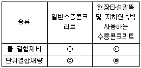
- ㉠ : 50% 이하
- ㉡ : 55% 이하
- ㉢ : 370kg/m3 이하
- ㉣ : 380kg/m3
(정답률: 46%)
51. 팽창 콘크리트에 대한 재료의 취급과 저장에 대한 내용으로 틀린 것은?
- 포대 팽창재는 12포대 이하로 쌓아야 한다.
- 포대 팽창재는 지상 3m 이상의 마루 위에 쌓아 운반이나 검사에 편리하도록 배치하여 저장하여야 한다.
- 3개월 이상 장기간 저장된 팽창재는 저장기간이 길어진 경우에는 시험을 실시하여 소요의 품질을 갖고 있는지를 확인한 후에 사용하여야 한다.
- 벌크 상태의 팽창재 및 팽창재와 시멘트를 미리 혼합한 것은 양호한 밀폐상태에 있는 사이로 등에 저장하여 다른 재료와 혼합되지 않도록 하여야 한다.
(정답률: 57%)
52. 수밀 콘크리트의 시공에 대한 방법으로 옳지 않은 것은?
- 적절한 간격으로 시공이음을 만들었다.
- 타설구획 내에서 연속으로 타설하였다.
- 연직시공이음에는 지수판을 설치하였다.
- 일반적인 경우보다 단위 굵은 골재량을 작게 하였다.
(정답률: 50%)
53. 콘크리트의 배합과 압송성과의 관계에 대한 설명으로 틀린 것은?
- 단위 시멘트량이 적어지면 압송성도 저하한다.
- 콘크리트 펌프의 압송부하는 콘크리트의 슬럼프가 커지면 작아진다.
- 압송을 용이하게 하기위해 콘크리트의 단위수량을 가능한 한 크게 하고, 잔골재량을 작게 한다.
- 잔골재, 굵은 골재의 입도 분포가 불연속인 경우 또는 잔골재 중의 미립분이 부족한 경우에 관이 막히는 경우가 있다.
(정답률: 53%)
54. 한중콘크리트는 소요 압축강도가 얻어질 때까지 콘크리트의 온도를 5℃이상으로 유지하는 등 초기양생을 실시하여야 한다. 계속해서 또는 자주 물로 포화되는 부분에 설치된 부재의 단면 두께가 보통의 경우일 때 양생을 종료할 수 있는 소요 압축강도의 표준으로 옳은 것은?
- 5MPa
- 10MPa
- 12MPa
- 15MPa
(정답률: 34%)
55. 콘크리트 타설 시 내부진동기의 사용 방법에 대한 설명으로 틀린 것은?
- 1개소 당 진동시간 30~40초로 한다.
- 내부진동기는 콘크리트로부터 천천히 뺴내어 구멍이 남지 않도록 한다.
- 진동다지기를 할 때에는 내부진동기를 하층의 콘크리트 속으로 0.1m 정도 찔러넣는다.
- 내부진동기는 연직으로 찔러 넣으며, 삽입간격은 일반적으로 0.5m 이하로 하는 것이 좋다.
(정답률: 53%)
56. 방사선 차폐용 콘크리트의 배합에 관한 일반적인 설명으로 틀린 것은?
- 콘크리트 배합은 소요의 성능이 얻어지도록 시험비비기를 실시한 후 정한다.
- 콘크리트의 워커빌리티 개선을 위해 품질이 입증된 혼화제를 사용할 수 있다.
- 콘크리트 슬럼프는 작업성을 고려하여 가능한 커야하며 일반적인 경우 180mm 이상으로 한다.
- 물-결합재비는 단위시멘트량이 과다로 되지 않는 범위 내에서 가능한 적게 하고 50%이하가 원칙이다.
(정답률: 50%)
57. 높은 설계기준압축강도 뿐만 아니라 높은 내구성을 요구하는 고강도 콘크리트의 설계기준압축강도로 옳은 것은?
- 일반적으로 35MPa 이상, 고강도경량골재 콘크리트는 25MPa 이상
- 일반적으로 40MPa 이상, 고강도경량골재 콘크리트는 25MPa 이상
- 일반적으로 35MPa 이상, 고강도경량골재 콘크리트는 27MPa 이상
- 일반적으로 40MPa 이상, 고강도경량골재 콘크리트는 27MPa 이상
(정답률: 49%)
58. 매스 콘크리트의 수축이음에 대한 설명으로 틀린 것은?
- 수축이음의 간격은 1~2m를 기준으로 한다.
- 수축이음의 단면 감소율은 35% 이상으로 하여야 한다.
- 벽체구조물의 경우 길이 방향에 일정간격으로 단면 감소 부분을 만든다.
- 수축이음의 위치는 구조물의 내력에 영향을 미치지 않는 곳에 설치한다.
(정답률: 30%)
59. 아래의 표에서 설명하는 것은?
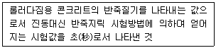
- VC값
- RI 시험값
- 슬럼프 값
- 다짐계수 값
(정답률: 59%)
60. 구조물별 시공이음의 위치에 대한 설명으로 옳지 않은 것은?
- 바닥틀의 시공이음은 슬래브 또는 보의 경간 단부에 둔다.
- 아치의 시공이음은 아치축에 직각방향이 되도록 설치하여야 한다.
- 바닥틀과 일체로 된 기둥 혹은 벽의 시공 이음은 바닥틀과의 경계부근에 설치하는 것이 좋다.
- 바닥틀의 시공이음에서 보가 그 경간 중에서 작은 보와 교차할 경우에는 작은 보의 폭의 약 2배 거리만큼 떨어진 곳에 보의 시공이음을 설치한다.
(정답률: 42%)
4과목: 구조 및 유지관리
61. 콘크리트 구조물의 탄산화를 방지하기 위한 구조물 신축시의 조치로서 틀린 것은?
- 다공질의 골재를 사용한다.
- 충분한 습윤양생을 실시한다.
- 투기성, 투수성이 작은 마감재를 사용한다.
- 콘크리트를 충분히 다짐하여 타설하고 결함을 발생시키지 않는다.
(정답률: 63%)
62. 보수공법 중 에폭시 수지 등을 수동식으로 주입하는 수동식 주입법의 특징으로 옳지 않은 것은?
- 주입 시 압력펌프를 필요로 한다.
- 주입용 수지의 점도에 제약을 받는다.
- 다량의 수지를 단 시간에 주입할 수 있다.
- 균열 폭 0.5mm 이하의 경우에는 주입이 곤란하다.
(정답률: 43%)
63. 유기질계, 무기질계 보수재료 선정 시 특히 중요하게 고려할 항목과 거리가 먼 것은?
- 전도성
- 투명성
- 탄성계수
- 열팽창계수
(정답률: 58%)
64. 구조물의 안전성을 평가하기 위하여 실시하는 재하시험에 대한 설명으로 틀린 것은?
- 재하시험은 크게 정적재하시험과 동적재하시험으로 구분할 수 있다.
- 재하시험을 수행하는 구조물에 대하여는 해석적인 평가를 수행하지 않아도 된다.
- 재하시험은 하중을 받는 구조물의 재령이 최소한 56일이 지난 다음에 수행하는 것이 좋다.
- 건물에서 부재의 안전성을 재하시험 결과에 근거하여 직접 평가할 경우에는 보, 슬래브 등과 같은 휨부재의 안전성 검토에만 적용할 수 있다.
(정답률: 53%)
65. 아래 그림과 같은 단면을 가지는 단순보에서 균열모멘트(Mcr)의 값은? (단, fck=25MPa, fy=400MPa, λ=1)
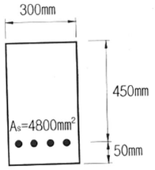
- 22.3kN·m
- 31.6kN·m
- 39.4kN·m
- 48.2kN·m
(정답률: 34%)
66. 스터럽을 사용하는 이유로 가장 적합한 것은?
- 주철근의 상호위치 확보
- 휨응력에 의한 균열방지
- 압축을 받는 축방향 철근의 좌굴방지
- 보에 작용하는 사인장 응력에 의한 균열방지
(정답률: 48%)
67. 콘크리트 옹벽 본체설계에 대한 설명으로 틀린 것은?
- 캔틸레버식 옹벽의 벽체는 자중과 토압의 수평분력을 고려해서 설계해야 한다.
- 뒷부벽은 T형 캔틸레버 보로 설계하여야 하며, 앞부벽은 직사각형 보로 설계하여야 한다.
- 캔틸레버식 옹벽의 뒷판은 뒷판 상부에 재하되는 모든 하중을 지지하도록 설계하여야 한다.
- 반중력식 옹벽은 지형 및 기타 물리적 제약에 의해 중력식 옹벽의 경우보다 벽체 두께를 얇게 하는 경우에 적용해야 한다.
(정답률: 19%)
68. 그림과 같은 철근 콘크리트 보에 전단력과 휨모멘트만이 작용할 때 콘크리트에 의한 전단강도는? (단, fck=21MPa, fy=400MPa이며, 경량콘크리트계수 λ=1이다.)
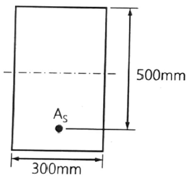
- 89.7kN
- 91.7kN
- 114.6kN
- 115.2kN
(정답률: 44%)
69. 프리스트레스트콘크리트의 철근부식 방지를 위한 최대 수용성 염소 이온(Cl-)량은? (단, 시멘트 질량에 대한 %)
- 0.3%
- 0.6%
- 0.03%
- 0.06%
(정답률: 32%)
70. 일반적으로 슈미트 해머를 사용하며, 일정한 충격 에너지로 충격을 가하여 움푹패거나 또는 되밀어치는 크기를 측정하는 비파괴 시험방법은?
- 인발 시험
- 관입 저항법
- 반발 경도법
- 머추리티 미터
(정답률: 67%)
71. 염해에 대한 콘크리트 구조물의 내구성 평가를 위한 염소이온 농도를 구하는 아래식에 포함된 X, Y, Z에 대한 설명으로 옳지 않은 것은? (단, C(x, t) : 깊이 x, 시간 t에서 염화물이온 농도의 설계값, erf : 오차함수)
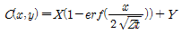
- 해중(海中)이 비말대(splash belt)보다 X가 더 크다.
- 콘크리트의 물-결합재비(W/B)가 작게 되면 Z가 작게 된다.
- 콘크리트 제조시에 제염처리가 되지 않은 바다모래를 사용하면 Y가 크게 된다.
- 보통 포틀랜드 시멘트보다 고로 슬래그 시멘트를 사용한 경우가 Z가 작게 된다.
(정답률: 42%)
72. 콘크리트 보수를 위해 각종 섬유(강섬유, 유리섬유, 폴리프로필렌섬유 등)를 사용할 경우 섬유가 갖추어야 할 조건으로 옳지 않은 것은?
- 섬유의 압축강도가 커야 한다.
- 섬유의 인장강도가 커야 한다.
- 내구성, 내열성 및 내후성이 우수하여야 한다.
- 섬유와 시멘트 결합재 사이의 부착성이 좋아야 한다.
(정답률: 58%)
73. 표준갈고리를 갖는 인장 이형철근D19(db=19.1mm)이 그림과 같이 배치되어 있을 때 정착길이(ldh)를 구하면? (단, fck=21MPa, fy=400MPa, 피복두께로 인한 보정계수는 0.7을 사용하며, 기타의 보정계수는 무시한다.)
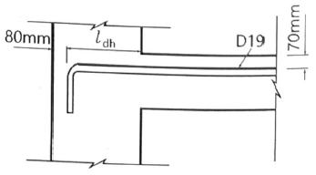
- 247mm
- 280mm
- 330mm
- 412mm
(정답률: 41%)
74. 동해의 예측에 기초한 평가 중 스켈링 깊이의 진행예측의 상태별 설명이 틀린 것은?
- 잠복기 : 동해깊이율이 작고, 강성이 거의 변화가 없으며, 철근의 부식이 없는 단계
- 진전기 : 동해깊이율이 크게 되고, 미관등에 의한 주변환경으로의 영향이 일어나고, 철근부식이 발생하는 단계
- 가속기 : 동해깊이율이 1.0까지 도달하며, 변형과 철근의 부식이 심해지는 단계
- 열화기 : 동해깊이율이 1.0이하가 되며, 급속한 변형이 크게 되는 동시에 부재로의 내하력에 영향을 미치는 단계
(정답률: 56%)
75. 슬래브와 보를 일체로 친 대칭 T형보의 유효폭을 결정하는 기준 중 틀린 것은? (단, bw:플랜지가 있는 부재의 복부폭)
- 보의 경간의 14
- (보의 경간의 1/2)+bw
- 양쪽의 슬래브의 중심 간 거리
- (양쪽으로 각각 내민 플랜지 두께의 8배씩) + bw
(정답률: 48%)
76. 화재에 의한 콘크리트 구조물의 열화현상에 대한 설명으로 틀린 것은?
- 콘크리트는 약 300℃에서 탄산화되기 쉽다.
- 급격한 가열 시 피복콘크리트의 폭렬이 발생하기 쉽다.
- 콘크리트는 탈수나 단면내의 열응력에 의해 균열이 생긴다.
- 콘크리트의 가열로 인한 정탄성계수의 감소에 의해 바닥슬래브나 보의 처짐이 증가한다.
(정답률: 56%)
77. 보를 설계할 때, 일반적으로 과소철근보로 설계하도록 권장하고 있는 이유로 가장 옳은 것은?
- 철근의 인장응력이 크기 때문에
- 철근이 고가이므로 경제성을 위하여
- 콘크리트의 취성파괴를 방지하기 위하여
- 철근의 배치가 쉽고, 시공성이 용이하기 때문에
(정답률: 54%)
78. 다음 그림과 같은 압축부재의 설게축강도 (øPn(max)는? (단, fck=24MPa, fy=350MPa, 종방향 철근의 전체 단면적(Ast)는 4000mm2이며, 단주기둥으로 ø=0.65이다.)
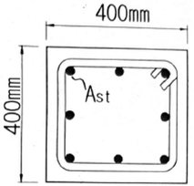
- 1955kN
- 2382kN
- 2579kN
- 2848kN
(정답률: 44%)
79. 콘크리트 구조물 강도해석에서 fck=30MPa일 때 등가 직사각형 응력블록의 높이비 β1은?
- 0.836
- 0.840
- 0.846
- 0.850
(정답률: 32%)
80. 콘크리트의 탄산화 방지 대책으로 옳지 않은 것은?
- 밀실한 콘크리트로 타설한다.
- 철근의 피복두께를 확보한다.
- 물-시멘트비(W/C)를 적게 한다.
- 콘크리트에 수축줄눈을 고려한다.
(정답률: 50%)